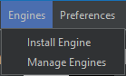
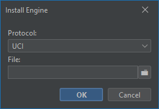
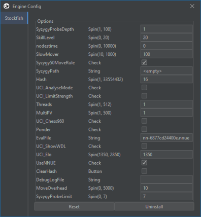

Sakk engine-ek az alkalmazásban
Az Engines menüpont alatt megtalálja az "Install Engine" és a "Manage Engines" alpontokat.
Install Engine
A felugró ablakban kiválaszthatja a használandó protokollt, és az engine futtatható állományát. Az állomány elérési helyét manuálisan is megadhatja, vagy a mező melletti mappa ikonra kattintva egy fájlválasztóban is kiválaszthatja. Az OK gombra kattintva az alkalmazás megkezdi az engine konfigurását, és telepítését az alkalmazásba. Ez után ez az engine meg fog jelenni a választható játékosok között.
Manage Engines
Erre az opcióra kattintva felugrik egy ablak, amelyben az engine-ek beállításait változtathatja. A beállítások nem érvényesülnek azonnal, csak akkor, amikor az engine legközelebb elindul. Bal oldali fülekre kattintva kiválaszthatja melyik engine beállításait szeretné változtatni. A választott engine beállításai egy három oszlopos táblázatban jelennek meg, melyek rendre a beállítás neve, típusa, és értéke.
A beállítások típusai a következők lehetnek:
- Button: Mint egy gomb, a funkció egyszeri végrehajtását eredményezi
- Check: Ki/Be kapcsolható funkció
- String: Szöveges paraméter, gyakran fájl elérési utat jelöl
- Combo: Előre meghatározott értékekre állítható paraméter
- Spin(min, max): Egész szám, melynek minimuma és maximuma a zárójelben szerepel
Az ablak alján lévő Reset gombbal az engine beállításait alapállapotba helyezheti. Az uninstall gomb megnyomására az alkalmazás törli az engine-t a memóriájából, így ezzel már nem tud a jövőben partikat játszani. A tárhelyen lévő fájlokhoz az alkalmazás nem nyúl, az engine akár mikor újra installálható.
